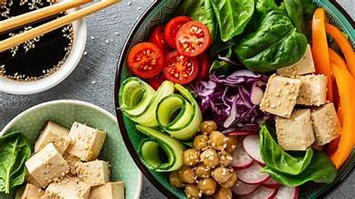

WELCOME TO NUTRIPLAN
Eat Healthy.
Live Healthy.
Discover delicious vegetarian recipes and make healthy eating a little easier every day.



WELCOME TO NUTRIPLAN
Discover delicious vegetarian recipes and make healthy eating a little easier every day.

NutriPlan helps users explore vegetarian recipes, view nutritional information, and keep their favorite meals organized in one convenient place. We want to make discovering healthy meal ideas simple and enjoyable.
Try our featured recipes
Loading featured recipes...
Start exploring vegetarian recipes with NutriPlan.